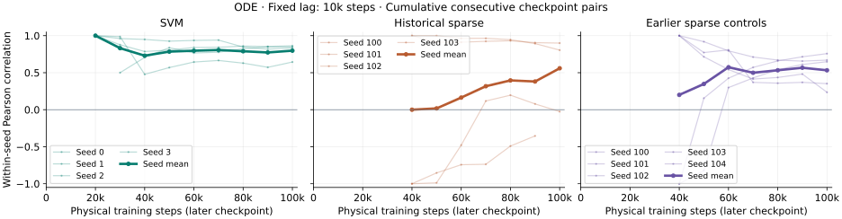

LIBERO-90 · task 2 · seeds 0–1
“Put the black bowl in the top drawer of the cabinet” in KITCHEN_SCENE10. Two fresh RL seeds (0 and 1) share the selected BC weights. Each run uses one training environment, 100,000 physical steps, a 600-step horizon, and an OGPO MLP action head initialized from a fresh BC run on 30 task demonstrations: 5,000 optimizer updates, 25 episodes per sampler every 500 updates. Select by ODE success: first checkpoint in the inclusive 25–50% interval, otherwise the lowest positive checkpoint; all-zero evaluations block RL.
BC success versus training steps
BC shows ODE and SDE together against optimizer updates; its band marks the 25–50% selection target. RL shows corrected SVM and historical sparse results, with optional earlier 0/1 sparse controls (SVM inactive, seeds 100–104). Each cohort has separate means and 95% Student-t intervals across available training seeds, separately for ODE and SDE. Hover over points or expand the table for seed counts. No interval is shown for n=1. Bands are clipped to 0–100% for display; the table retains raw bounds. Seed counts vary while runs progress and where historical runs stopped. RL counts physical steps per environment. Refreshes every 30 seconds.
Evaluation values and checkpoint details
The training view uses only completed episodes: successes among the most recent min(20, completed episodes). The curve stays constant while the next episode runs; hover for the integer completed-episode count.
Evaluation videos and learned-reward trajectory overlays
Comparison caveat: this implementation follows the paper’s 0/1 outcome reward; historical sparse OGPO used −1/0. With success termination and a variable episode length, that offset can change incentives. This first comparison evaluates the full adapted method; it does not isolate the process reward alone. The new 30-demo BC initialization also differs from the historical sparse runs’ 50-demo BC-2000 initialization. These reused baselines are contextual comparisons, rather than a matched-initialization ablation. All SVM seeds share a single BC checkpoint: these intervals describe RL-seed variation, not BC-training variation. They do not establish a controlled causal comparison against the historical sparse cohort.
Historical baseline protocol · Original evaluation points · Current seed 0 spec · Current seed 1 spec · Original run data · Cohort status, means & intervals
Success correlation across checkpoints
Within each seed, correlate success rates at consecutive evaluations: 0→10k, 10k→20k, … . Each point uses all available exact 10k-lag pairs up to that training step. Light lines show individual seeds; the dark line is their arithmetic mean. SVM (green), historical sparse (orange), and earlier sparse controls (purple) have separate panels. ODE and SDE remain separate.

Positive correlation indicates temporal persistence in success rates within a seed. Training trends can also produce high correlations. Missing or undefined coefficients are left blank.
Definition, seed counts, and correlation values
The mean includes only seeds with a defined coefficient at that step. Each coefficient needs at least two checkpoint pairs and nonzero variance in both vectors; with only two pairs it is necessarily ±1. This is a cumulative within-seed correlation, not a correlation across seeds at a single pair of checkpoints. Missing checkpoints are never interpolated or bridged; sparse logs skip 10k, so their first eligible pair is 20k→30k. No line is extended beyond a seed's last evaluation. The table gives counts and the JSON includes individual coefficients and original paired success rates.
The cohorts use different BC initializations and/or outcome-reward conventions, as described above. This descriptive association does not establish a causal reward effect or policy stability. Evaluations use 25 episodes per checkpoint and sampler, so measurement noise affects these values.
Loading correlation values…
Download plot (SVG) · All values and paired checkpoint rates (JSON)

Success visitation
matching
Learn which state–action visits belong to successful episodes, then use that signal as an online process reward for the OGPO action head.
Tsao, Wagenmaker & Levine · paper, §§4.1–4.2 and Appendix D
The loss and reward
Label every transition in a successful training episode positive, and every transition in a failed episode negative. Balance the classes. With logit \(g_\theta(x)\) and classifier \(D_\theta(x)=\sigma(g_\theta(x))\):
We minimize negative log likelihood. The displayed minimization in the paper’s Eq. (2) omits this minus sign; minimizing the printed positive log likelihood would reverse the intended classification objective.
Successful episodes move into the positive class as training proceeds. This differs from a classifier of terminal success states. Before both classes exist, shaping is zero.
The KL interpretation and its limit
The identity uses unclipped log density ratios with matching support. The paper’s preservation result assumes deterministic dynamics and its visitation estimator. A stationary neural classifier, finite replay, discounting, and early termination do not inherit an unconditional guarantee.
A 4,111-dimensional input
The discriminator shares the observation features with OGPO, but has its own parameters and optimizer. It receives the pre-action observation and the corresponding executed action. It does not receive the next observation, a latent noise action, the four-action chunk as a whole, simulator privileged state, or the success label as an input. The label supervises its loss.
Implementation choice: one time-independent classifier over pooled physical transitions. The paper’s theoretical notation uses time-indexed visitations; this adaptation does not add a time coordinate. The encoder stays frozen in BF16, its pooled features and the discriminator compute use float32.
Compared with the MPAIL code
| Aspect | This SVM implementation | mpail-research production reward |
|---|---|---|
| Input | Current frozen feature + proprioception + executed action | Concatenated latent transition \((z_t,z_{t+1})\); optional latent slices. The action parameter is unused in Reward.forward. |
| Positive / negative samples | Successful / failed online training episodes | Expert demonstration / generator transitions. Optional success feedback can exclude validated generator successes; success-frame terms are configurable. |
| Objective minimized | Balanced binary cross entropy | \(-\mathbb{E}[f(\mathrm{expert})]+\mathbb{E}[f(\mathrm{generator})]+c_{\mathrm{GP}}\,\mathrm{GP}\), with configurable penalty variants |
| Meaning of output | Logit estimates a success/failure visitation density ratio | Unnormalized Wasserstein score; it is not a calibrated log probability or log odds |
| Policy improvement | OGPO flow MLP and Q learning with outcome + clipped process reward | Learned latent dynamics and MPPI planning use a transition reward |
| Representation gradients | Frozen encoder; only discriminator parameters update for this loss | Configurable encoder shaping, latent slices, and reward ensembles. These are not copied into this implementation. |
Inspected sibling sources: mpail2/reward.py: Reward.forward, mpail2/learner.py: train_reward, and mpail2/planner.py. The distinction concerns this checkout’s actual Wasserstein implementation, even though its Reward docstring calls it AIRL.
Training protocol
| Discriminator | Three 256-wide ReLU hidden layers; Adam \(10^{-4}\); balanced batch 64; 32 gradient updates every 1,000 physical environment steps (paper Appendix D, Table 5; wrapper activation corrected November 23) |
|---|---|
| Process reward | \(\lambda=0.05\), \(\beta=20\); shaped step reward within \([-1,2]\). Q clipping expanded to \([-100,200]\) for \(\gamma=0.99\). |
| BC initialization | First 30 demonstrations in numerical demo-ID order; full 5,000 optimizer updates. Evaluate 25 episodes each for ODE/SDE every 500 updates. Retain the first ODE checkpoint in [25%,50%]; if none qualifies, retain the smallest strictly positive ODE checkpoint. All-zero results block RL. Early stopping is disabled. |
| Initial data | Existing 20k-step online warm-up, within the 100k budget. No extra initial rollouts; no demonstrations or held-out evaluations enter the discriminator. |
| Replay | Only completed episodes receive labels. Raw outcomes remain unchanged in replay. Every sampled physical transition is rescored before discounted chunk-prefix returns are constructed. Incomplete final episodes remain excluded. |
| OGPO | Original four-action flow MLP, actor/critic batch 256, group 32, UTD 1, frozen pi05_libero BF16 backbone, same historical schedules and optimizer reset. Existing success-buffer BC regularization remains enabled. |
| Evaluation | 25 official held-out reset states per sampler, initial evaluation and then 20k, 30k, …, 100k. Training states 0–24; evaluation states 25–49. |
| Diagnostics | svm.csv records class counts, balanced training-batch accuracy, loss, mean logits, and skipped updates. Training accuracy is not a held-out metric. |
| Checkpointing | Rolling agent and discriminator optimizer state. Replay is not saved; exact training resume is unsupported and rejected. |
The small MLP follows the paper’s feature-based LIBERO setting. The update cadence follows Appendix D, Table 5; using OGPO, PaliGemma features, pooled physical-step labels, and the existing warm-up are explicit adaptations. This is not an exact reproduction of the paper’s DSRL or raw-image π₀ experiment.
Validation, November 22: the earlier CPU tests passed, but their fake environment omitted EpisodeMonitor and missed the production activation bug. The regression now exercises the actual wrapper and checks the periodic trigger independently of episode boundaries. A real task-2 LIBERO reset/step smoke test passed. A synthetic GPU update passed with production batch 256, group 32, the 4,104D observation, and SVM relabeling. These checks do not constitute the requested 100k training experiment.
Code locations and launch command
OGPO/ogpo/success_visitation.py contains the classifier, balanced loss, and clipped logit reward. The online runner supplies episode labels; Dataset.sample_sequence relabels before discounting. scripts/run_success_visitation.py trains and selects BC, records the checkpoint hash, launches SVM RL, and updates this page’s data.
python3 scripts/run_success_visitation.py \
--demo-file /path/to/KITCHEN_SCENE10_put_the_black_bowl_in_the_top_drawer_of_the_cabinet_demo.hdf5 \
--launch --gpu 0The launcher first trains the 30-demo BC head, then restores the selected checkpoint for fresh SVM RL. It records the selected step, measured success rates, and checkpoint hash. Selection evaluations are not independent confirmations. Asset paths can be supplied as CLI options.